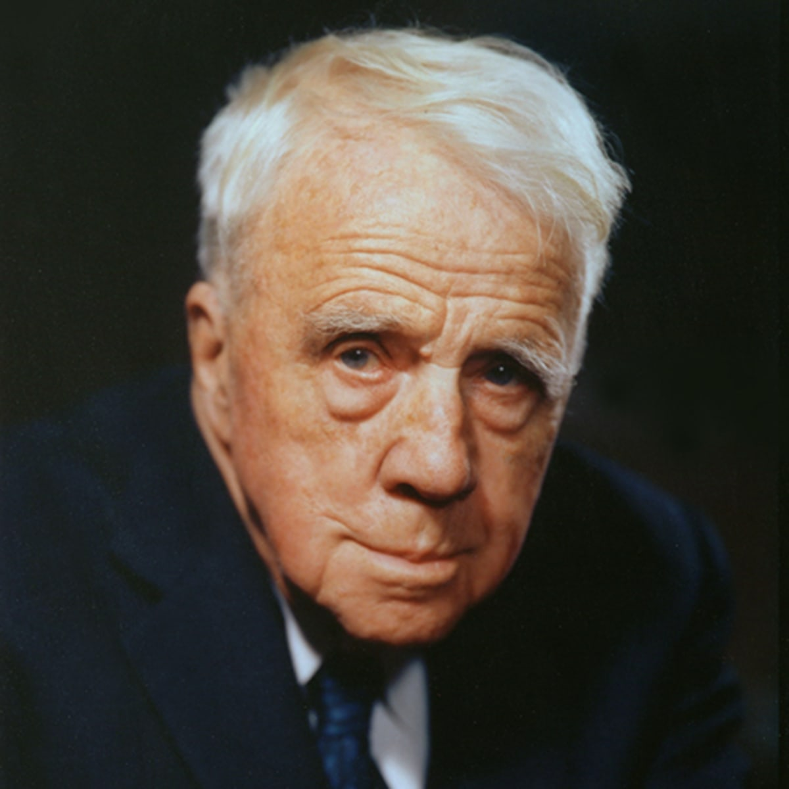

Robert Frost was an American Poet who was known as one of the best. Frost was born on March 26, 1874 and died on January 29, 1963. He first started writing poems while he was in high school. Frost was best known for his realistic depictions of rural life. He used rural life in New England to bring up conversation about complex social and philosophical issues. Frost is also the only poet to ever receive four Pulitzer Prizes for poetry.
To The Road Not Taken 